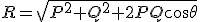
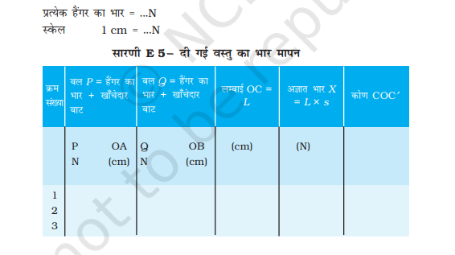

कार्यविधि ( सिमुलेशन )
१ . सिमुलेशन को Pause बटन दबाकर रोकिये।
२ . अज्ञात भार ( मध्य वाला भार ) के मान को स्लाइडर द्वारा सेट कीजिये।
३ . दाएं भार को स्लाइडर की सहायता से सेट कीजिए।
४ . बाएं भार को स्लाइडर की सहायता से सेट कीजिए।
५ . अब सिमुलेशन को प्ले (PLAY) बटन दबाकर ON कीजिए।
६ . आप देखेंगे की बलों का निकाय जब तक संतुलन अवस्था में आ नहीं जाता तब तक धागे का मध्य बिंदु गति करता है।
७ . अब साम्य अवस्था में पॉज (Pause) बटन दबाइए।
८ . स्केल को Mause पॉइंटर की सहायता से drag करिएँ तथा OA, OB तथा OC को ज्ञात कीजिए। आप यह मान बिना स्केल की सहायता से Mouse पॉइंटर को बिंदु O, A, B तथा C पर डबल क्लीक करके उन बिंदु के निर्देशांक ज्ञात करके तथा बिंदुओं के मध्य की दुरी ज्ञात करके भी पता कर सकतें है।
९ . स्केल का अल्पतमांक 0.5 हैं। अतः यदि स्केल की रीडिंग x हैं, तो दूरी का मान (x गुणा 0.5 ) होगा।
१० . अब सारणी द्वारा अज्ञात भार का मान ज्ञात कीजिये।
सारणी ( सिमुलेशन हेतु )
- SCALE = (OA/OB की मापी गयी लम्बाई) / (दाएं/ बायें वस्तु का सिमुलेशन में सेट किया गया द्रव्यमान)
- P=OA x SCALE
- Q=OB x SCALE
- θ = π-Left Angle -Right Angle
- R= \sqrt{P^2 + Q^2 + 2PQ \cos \theta}
| क्र |
मध्य(अज्ञात ) द्रव्यमान (सिमुलेशन में सेट किया गया ) |
दायाँ द्रव्यमान (सिमुलेशन में सेट किया गया ) |
बायां द्रव्यमान (सिमुलेशन में सेट किया गया ) |
OA | OB |
मध्य (अज्ञात) द्रव्यमान R (सदिश नियम से ) |
| 1 | ||||||
| 2 | ||||||
| 3 | ||||||
| 4 | ||||||
| 5 |
कार्यविधि ( वास्तविक प्रयोग )
1. साहुल सूत्र की सहायता से ग्रैवसैंड उपकरण के बोल को ऊर्ध्वाधर स्थिति में व्यवस्थित कीजिए। यह सुनिश्चित कीजिए कि घिरनियाँ मुक्त रूप से घूर्णन करती हों। ड्राइंग पिनों की सहायता से बोर्ड पर एक सफ़ेद कागज जड़िए।
2. पक्के धागे का एक काफी लंबा टुकड़ा लीजिए तथा इसके सिरों से दो हैंगर बाँधिए। इस धागे के मध्य में बिंदु O पर एक अन्य धागा लेकर गाँठ (संधि बिन्दु) बाँधिए और इसके मुक्त सिरे से दी गई अज्ञात भार की वस्तु बाँधिए। चित्र में दिखाए अनुसार इन धागों को घिरनियों पर व्यवस्थित कीजिए और हैंगरों में खाँचेदार भार भी जोड़िए।
3. हैंगरों में खाँचेदार भार इस प्रकार जोड़िए कि धागों का संधि बिंदु सफ़ेद कागज के निचले मध्य भाग में साम्यावस्था में आ जाए। यह ध्यान रहे कि कोई भी भार अथवा धागा, बोर्ड अथवा मेज़ को कहीं भी स्पर्श न करे।
1. तीन धागों की गाँठ को ‘कोई घर्षण नहीं’ की स्थिति में लाइए। इसके लिए, इसकी गाँठ को इसकी ‘कोई घर्षण नहीं’ की स्थिति से काफी दूर किसी केसी बिंदु पर ले जाइए। यहाँ ले जाकर छोड़ने पर यह ‘कोई घर्षण नहीं’ की स्थिति की ओर गमन करेगा क्योंकि यह साम्यावस्था में नहीं है। जब यह गमन कर रहा हो तो बोर्ड को धीरे-धीरे थपथपाइए। वह स्थिति, जिसमें अब गाँठ विराम की स्थिति में आ जाती है, ही “कोई घर्षण नहीं” की स्थिति है। इस स्थिति को बिंदु द्वारा अंकित कीजिए। इस क्रियाविधि को कई बार दोहराइए। हर बार विभिन्न दिशाओं से गाँठ को “कोई घर्षण नहीं” की स्थिति में आने दीजिए और इस स्थिति को अंकित करते रहिए। अपने विवेक से जो बिंदु पास-पास हों उनका केंद्र ज्ञात कर उसे O के रूप में चिह्नित कीजिए।
2. किसी धागे के अनुदिश लगने वाले बल की दिशा अंकित करने के लिए कागज पर धागे के नीचे समतल दर्पण की पट्टिका रखिए। अपनी आँख की स्थिति को इस प्रकार समायोजित कीजिए कि धागे तथा उसके प्रतिबिंब के बीच कोई पैरेलैक्स न रहे। दर्पण के किनारे पर दो बिंदु A1 तथा A2 वहाँ अंकित कीजिए जहाँ पर धागे का प्रतिबिंब दर्पण से अलग होता है । इसी प्रकार दो अन्य बलों की दिशाएँ बिन्दुओं B₁ व ब B₂ तथा X1 व X₂ द्वारा क्रमशः धागों OB व OX के अनुदिश अंकित कीजिए।
3. हैंगरों को हटा कर प्रत्येक हैंगर तथा उस पर लटके खाँचेदार बाटों के भारों को नोट कीजिए।
4. बोर्ड को कागज सहित मेज पर क्षैतिज रखिए। कागज़ पर अंकित बिंदुओं के तीन युग्मों को सरल रेखा खींचकर इस प्रकार मिलाइए कि ये तीनों रेखाएँ बिंदु पर मिलें। ये तीनों सरल रेखाएँ तीनों बलों की दिशाएँ निरूपित करती हैं।
5. कोई उचित स्केल चुनकर (जैसे 50 N = 1 cm) बिन्दुओ O पर लगने वाले दो बलों P व Q को निरूपित करने के लिए क्रमशः लम्बाइयांओ OA तथा OB खींचिए। OA तथा OB को संलग्न भुजाएं मानकर समांतर चतुर्भुज OACB पूरा कीजिए। यह सुनिश्चित कीजिए कि स्केल का चयन इस प्रकार हो कि समांतर चतुर्भुज कागज़ का अधिकतम क्षेत्र घेरे।
6. O व C को मिलाइए। OC की लंबाई दी गई वस्तु के भार की माप के तुल्य होगी। यह जाँच कीजिए कि OC सरल रेखा XO के अनुदिश है अथवा नहीं। यदि ऐसा नहीं है, तो रेखा OC को BC के किसी बिंदु C’ पर मिलाइए और कोण COC’ को मापिए।
7. भारों के दो अन्य सेटों के लिए 1 से 9 तक के चरणों को दोहराइए तथा दी के अज्ञात भार के मानों का माध्य परिकलित कीजिए।
सारणी ( वास्तविक प्रयोग )

\frac{OA या OB की लम्बाई}{दाईं या बाईं वस्तु का द्रव्यमान}
\frac{OA या OB की लम्बाई}{दाईं या बाईं वस्तु का द्रव्यमान}